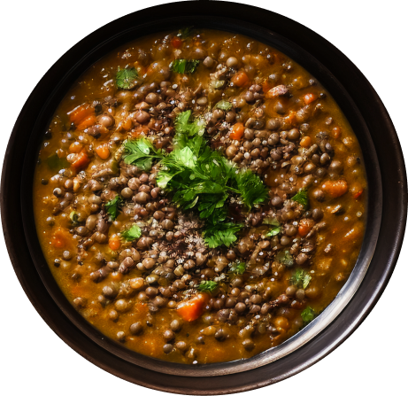

20 minutes
230 calories
Beginner

Warm the olive oil in a large Dutch oven or pot over medium heat. One-fourth cup olive oil may seem like a lot, but it adds a lovely richness and heartiness to this nutritious soup.
Once the oil is shimmering, add the chopped onion and carrot and cook, stirring often, until the onion has softened and is turning translucent, this takes about 5 minutes.
Add the garlic, cumin, curry powder and thyme. Cook until fragrant while stirring constantly, about 30 seconds. Pour in the drained diced tomatoes and cook for a few more minutes, stirring often, in order to enhance their flavor.
Pour in the lentils, broth and the water. Add 1 teaspoon salt and a pinch of red pepper flakes. Season generously with freshly ground black pepper. Raise heat and bring the mixture to a boil, then partially cover the pot and reduce the heat to maintain a gentle simmer. Cook for 25 to 30 minutes, or until the lentils are tender but still hold their shape.
Transfer 2 cups of the soup to a blender. Securely fasten the lid, protect your hand from steam with a tea towel placed over the lid, and purée the soup until smooth. Pour the puréed soup back into the pot. (Or, use an immersion blender to blend a portion of the soup.)
Add the chopped greens and cook for 5 more minutes, or until the greens have softened to your liking. Remove the pot from the heat and stir in 1 tablespoon of lemon juice. Taste and season with more salt, pepper and/or lemon juice until the flavors really sing. For spicier soup, add another pinch or two of red pepper flakes.
Serve while hot. Leftovers will keep well for about 4 days in the refrigerator, or can be frozen for several months (just defrost before serving).